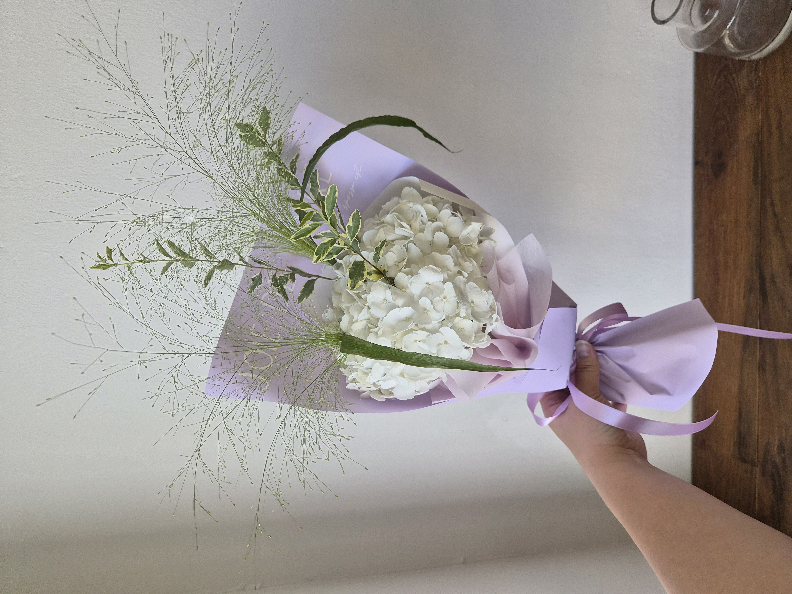
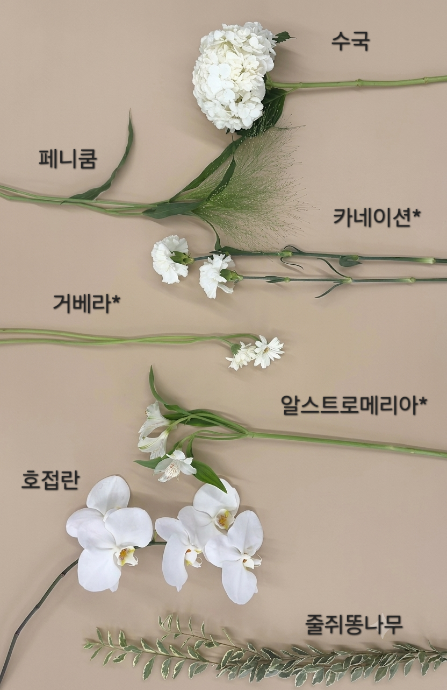
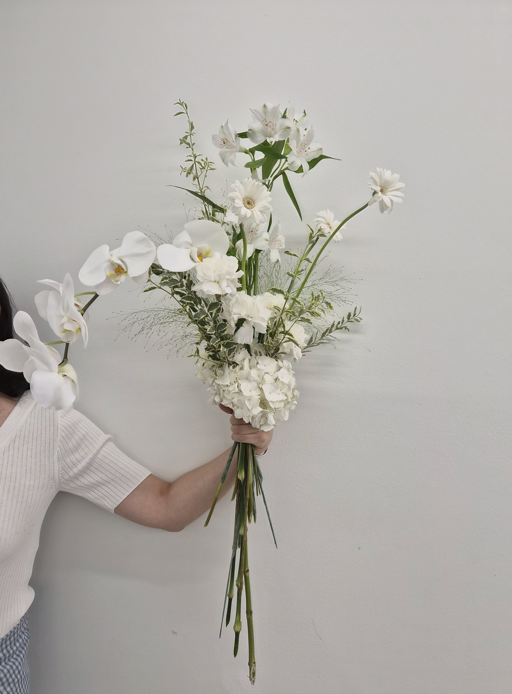
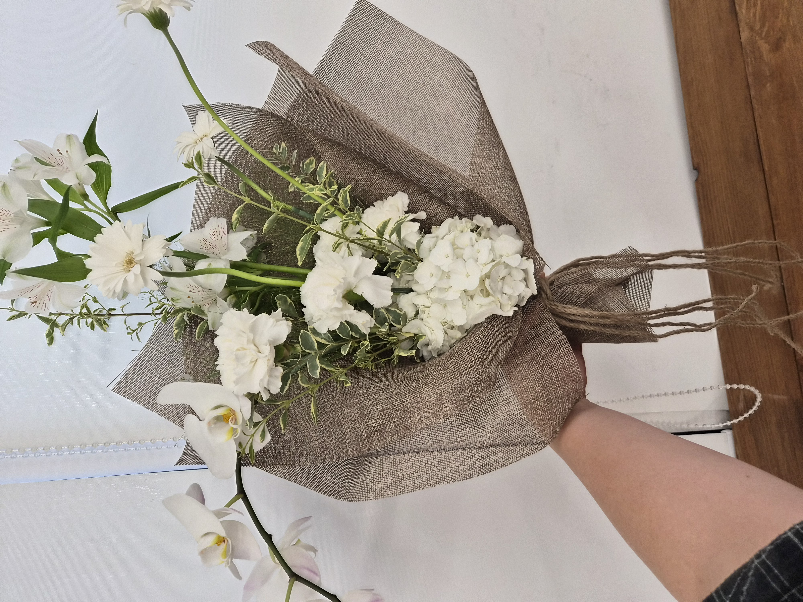
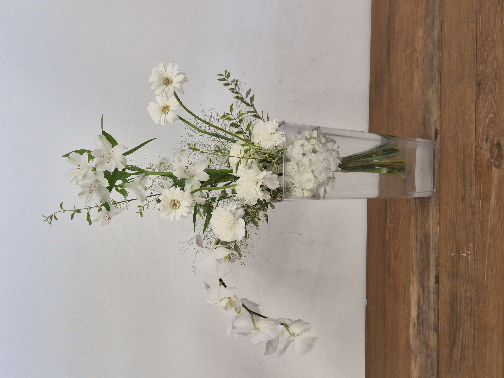

CLASS WORK · HAND-TIED
2026.09.15
LINE AND MASS
HAND-TIED BOUQUET
白の線と量感を生かした構成
04 / CLASS WORK
CONCEPT
LINE,
MASS
& BREATH.
수국이 만드는 풍성한 매스를 중심에 두고, 호접란의 곡선과 거베라, 알스트로메리아가 위로 솟는 선을 더해 한 작품 안에서 덩어리와 선의 차이를 분명하게 드러낸 핸드타이드 부케입니다.
전체 색은 화이트와 그린으로 절제하고, 꽃과 그린 사이에 충분한 여백을 남겨 같은 밝기의 소재 안에서도 크기, 방향, 질감의 차이가 또렷하게 읽히도록 구성했습니다.
アジサイの豊かなマスを中心に置き、 コチョウランの曲線、ガーベラとアルストロメリアの上へ伸びるラインを重ねることで、 一つの作品の中で塊と線の違いがはっきり見えるようにしたハンドタイドブーケです。 色は白とグリーンに抑え、花材の間に十分な余白を残すことで、 同じ明るいトーンの中でも大きさ・方向・質感の差が読めるように構成しています。
COLOR PALETTE
色の構成
WHITE,
GREEN,
TAUPE.
소프트 화이트와 아이보리를 중심으로 한 밝은 단색 구성이지만, 수국의 무게감 있는 흰색과 호접란의 매끈한 화이트, 페니쿰의 안개 같은 그린은 서로 다른 온도와 질감을 만듭니다. 최종 포장에는 토프 계열의 소재를 사용해 자연스럽고 차분한 대비를 더했습니다.
ソフトホワイトとアイボリーを中心とした明るい単色構成ですが、 アジサイの量感のある白、コチョウランのなめらかな白、 パニカムの霧のようなグリーンがそれぞれ異なる温度と質感をつくります。 仕上げにはトープ系のラッピングを用い、自然で静かなコントラストを加えました。
SOFT WHITE
#F1F1ECCREAM IVORY
#E6E1D7MIST GREEN
#C4CFB2SAGE GREEN
#7C8D73WARM TAUPE
#8B7A6A
큰 수국 한 송이가 만드는 둥근 매스에 페니쿰과 그린을 가볍게 얹어보며, 이번 작업에서 중심이 되는 볼륨과 공기감의 관계를 먼저 확인했습니다.
大きなアジサイ一輪がつくる丸いマスに、 パニカムとグリーンを軽く重ねることで、 今回の作品で中心となるボリュームと空気感の関係を先に確認しました。
MATERIALS
使用花材
수국으로 중심의 매스를 만들고, 카네이션과 알스트로메리아, 거베라로 화이트 톤의 높낮이와 리듬을 더했습니다. 호접란은 한쪽으로 흐르는 곡선을 만들고, 페니쿰과 줄쥐똥나무는 가볍고 섬세한 선으로 외곽을 확장합니다.
アジサイで中心のマスをつくり、 カーネーション、アルストロメリア、ガーベラで白の高低差とリズムを加えました。 コチョウランは一方向へ流れる曲線をつくり、 パニカムと斑入りプリペットは軽く繊細なラインとして外側へ広がります。
수국
アジサイ
카네이션
カーネーション
거베라
ガーベラ
알스트로메리아
アルストロメリア
호접란
コチョウラン
페니쿰
パニカム
줄쥐똥나무
斑入りプリペット
WHITE · IVORY
SAGE · TAUPE
白とアイボリーを基調に、
セージとトープを重ねた配色。

사용한 꽃과 그린을 펼쳐 보면, 둥글고 무게감 있는 수국과 부드러운 카네이션, 선이 가는 페니쿰과 곡선이 강한 호접란처럼 서로 다른 형태가 이번 작업의 구조를 만들고 있다는 점이 분명해집니다.
花材を並べてみると、 丸く重みのあるアジサイ、やわらかなカーネーション、 細い線のパニカム、曲線の強いコチョウランなど、 異なる形の組み合わせが今回の構成を支えていることがよく分かります。
COMPOSITION
構成とバランス
MASS,
LINE,
SPACE.
수국의 덩어리는 아래쪽에서 안정적인 중심을 만들고, 거베라와 알스트로메리아는 위로 솟아오르며 세로 흐름을 강화합니다. 왼쪽으로 길게 떨어지는 호접란은 구조 안에 부드러운 비대칭을 더합니다.
페니쿰은 바깥으로 퍼지면서 공기감과 여백을 만들고, 줄쥐똥나무는 소재 사이를 이어 주는 중간 리듬을 담당합니다. 매스를 꽉 채우기보다 선과 선 사이의 빈 공간을 남겨 화이트 계열 안에서도 시선이 자연스럽게 이동하도록 구성했습니다.
전체적으로는 아래가 무겁고 위가 가벼운 구조이지만, 중심에서 바깥으로 뻗는 선들이 불균형으로 보이지 않도록 길이와 방향을 여러 지점에서 반복해 실루엣의 균형을 맞췄습니다.
アジサイの塊は下部で安定した中心をつくり、 ガーベラとアルストロメリアは上へ伸びて縦の流れを強めます。 左へ長く流れるコチョウランは構成にやわらかな非対称性を加え、 パニカムは外側へ広がって空気感と余白をつくります。 マスを詰め込みすぎず、線と線の間に空間を残すことで、 白いトーンの中でも視線が自然に動くように構成しました。

FORM STUDY
LONG LINE,
SOFT MASS
& FLOW.
손에 들었을 때는 바인딩 포인트 아래로 길게 내려오는 줄기와, 위아래로 흩어진 선의 방향이 더 잘 드러납니다. 중심의 매스가 충분히 낮게 자리 잡고 있기 때문에, 외곽으로 뻗는 라인이 많아도 전체가 가볍게 들려 보입니다.
手に持った状態では、バインディングポイントから下へ落ちる茎と、 上下に散るラインの方向がよりはっきり見えます。 中心のマスが十分低い位置にあるため、 外へ伸びる線が多くても全体は軽やかに見えます。
FINAL VIEW
完成したかたち

브라운 메시 포장은 화이트 계열의 꽃을 더 부드럽게 감싸면서, 자연 소재 같은 질감으로 작품의 공기감과 여백을 강조합니다. 수국의 밀도 있는 중심과 외곽의 가는 선들이 하나의 흐름으로 읽히도록 포장 역시 너무 단단하지 않게 가볍게 마감했습니다.
ブラウンのメッシュラッピングは白い花材をやわらかく包み込み、 自然素材のような質感で作品の空気感と余白を強調します。 密度のあるアジサイの中心と外側の細いラインが 一つの流れとして読めるよう、ラッピングも硬く締めすぎず軽やかに仕上げました。

WRAPPED DETAIL
TEXTURE,
DENSITY
& LIGHT.
가까이에서 보면 꽃과 포장, 끈의 질감이 서로 겹치며 전체 작품에 한층 부드러운 레이어를 만듭니다. 밝은 화이트 톤 안에서도 수국의 둥근 면, 카네이션의 프릴, 거베라의 매끈한 꽃판, 호접란의 넓은 곡면이 각기 다른 밀도와 빛을 보여 줍니다.
クローズアップで見ると、花とラッピング、紐の質感が重なり合い、 作品全体によりやわらかなレイヤーをつくっています。 明るい白の中でも、アジサイの丸い面、カーネーションのフリル、 ガーベラの滑らかな花面、コチョウランの広い曲面がそれぞれ異なる密度と光を見せます。
REFLECTION
制作を振り返って
WEIGHT,
LINE,
SILENCE.
색을 거의 한 톤으로 제한한 상태에서, 매스와 라인, 방향과 여백만으로 차이를 만들어야 했기 때문에 형태의 기본 구조를 더 세밀하게 보게 된 작업이었습니다.
특히 호접란처럼 존재감이 큰 곡선 소재는 한 줄기의 위치만 달라도 전체 인상이 크게 달라졌고, 수국의 매스를 너무 무겁게 두면 윗부분의 선이 죽고, 반대로 너무 가볍게 두면 중심이 사라진다는 점을 직접 확인할 수 있었습니다.
色数をほとんど一つのトーンに絞った状態で、 マスとライン、方向と余白だけで差をつくる必要があったため、 形の基本構造をより細かく見ることになった制作でした。 とくにコチョウランのように存在感の強い曲線素材は、 一本の位置が変わるだけでも全体の印象が大きく変わることを実感しました。
중심 매스의 안정감을 유지하면서도, 외곽으로 뻗는 선의 시작점과 간격을 더 유연하게 연결해 한층 자연스러운 비대칭 실루엣 만들기